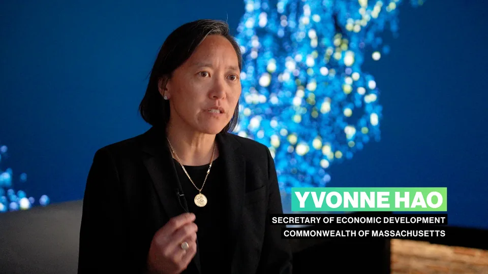
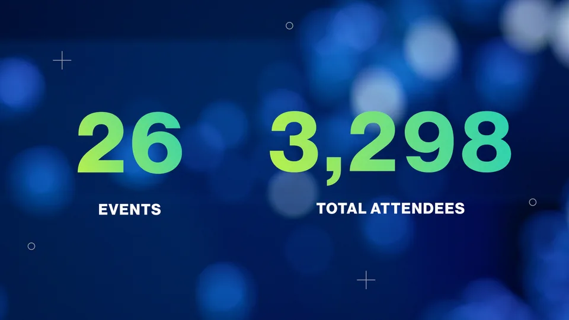
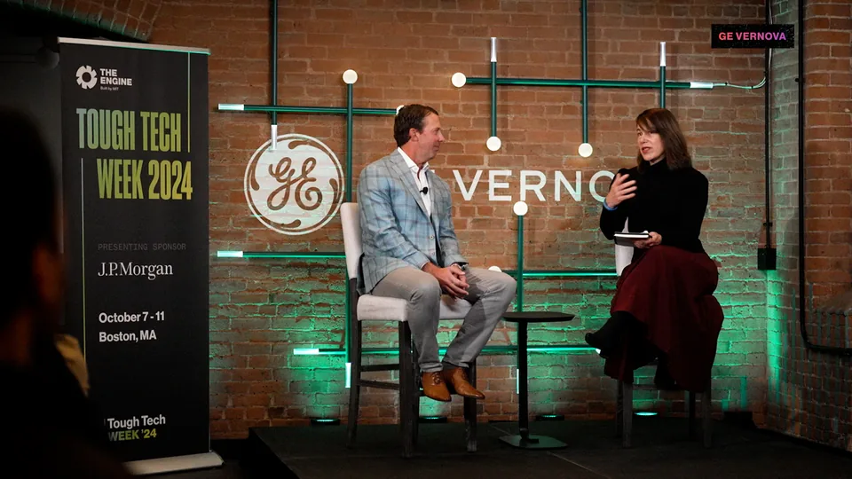
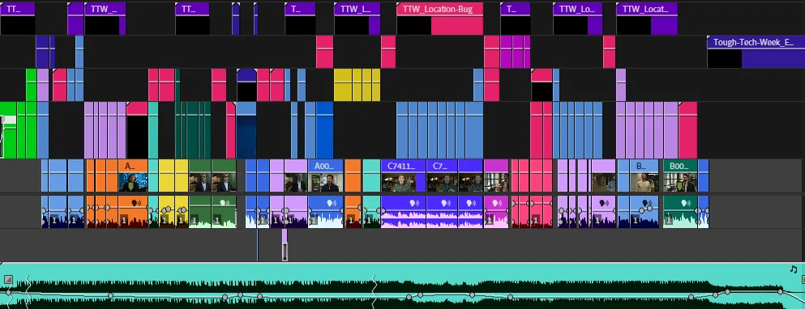

A compilation of clips and man-on-the-street interviews from 2024's "Tough Tech Week" hosted by MIT's "The Engine" highlighting the efforts of new and emerging climate and sustainability technology companies.
While encapsulating a week's worth of interview material and event coverage wasn't easy, after a few rounds of back and forth with the client, we were able to cobble together a story arc they felt encapsulated the spirit of the event all while catering to the interests of keynote speakers and sponsors.
Color correction is always an interesting extra wrinkle in widely dispersed event series like this, but thanks to our videographers' attention to lighting conditions, I was able to coax everything back to baseline white balance.



